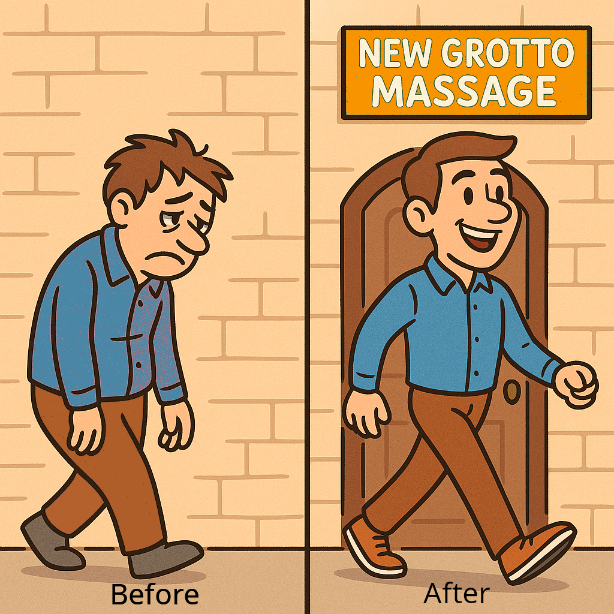

Hands on, building the new you.
At New Grotto Massage, it’s not just about a massage — it’s about how you feel afterward.
A Story of Relief and Renewal
Jack came to us exhausted and hurting. Every day felt like a struggle — his muscles were tight with knots, his energy was gone, and even simple tasks left him drained. For years he searched for answers, trying one treatment after another. Doctors prescribed medications, specialists ran tests, and he explored acupuncture and even standard Western massage therapy. Those sessions brought some relaxation, but the relief was surface-level and short-lived. Nothing seemed to touch the deeper issues that were holding him back.
Finally, almost out of options, Jack decided to try a Chinese massage. From the very first session with one of our well-trained massage therapists, he noticed a difference. The techniques went beyond simply easing tension — they worked into the layers of muscle and connective tissue, restoring circulation and untying stubborn knots that had resisted other treatments. The initial soreness soon gave way to something lasting: less pain, more energy, and a renewed sense of well-being. Each treatment built on the last, helping him feel stronger, lighter, and more alive.
Massage is not a cure-all — nothing is. Real healing also takes good nutrition, movement, and self-care. But for Jack, Chinese massage was the missing piece. It gave him the strength to exercise again and the willpower to make healthier choices, instead of just reaching for comfort when life felt heavy. It became the spark that helped him start feeling better every day.
Why Chinese Massage Feels Different
What makes Chinese massage unique is its focus on restoring the natural flow of energy in the body, known as Qi (Chi). When Qi becomes blocked or unbalanced, the result can be pain, fatigue, or emotional strain. By applying precise techniques along the body’s pathways of energy, Chinese massage works not only on the muscles but also on the body’s deeper systems of balance.
The result is more than muscle relief — many people report feeling renewed energy, a lighter mood, and a clearer outlook after their sessions. Curious how Qi works? Learn more about Qi and Chinese Massage →
Who We Help
Life leaves you tired, stressed, and sore. Our clients are everyday people — professionals, parents, athletes, and anyone who carries the weight of daily life on their shoulders. If you’ve ever walked in feeling worn out, we want you to walk out feeling renewed.
How We Help
Our skilled massage therapists use traditional Chinese Massage techniques, deep tissue work, and Thai massage to melt away tension and restore balance. Every session is designed around you — whether you need deep relief from chronic pain or simply want to recharge after a long day.
What Makes Us Different
- Authentic Chinese Massage tradition brought directly from experienced massage therapists.
- A clean, calm environment where you can truly relax.
- Walk-ins welcome every day — no need to wait weeks for relief.
The Difference You’ll Feel
Most of our clients tell us the same thing: they walk in feeling weighed down and leave feeling lighter, taller, and more alive. That’s not an accident — it’s the result of skilled hands, caring hearts, and a commitment to helping you feel better.
Ready to Start Building the New You?
Relief is at hand.
📍 Visit us at 3700 Fredericksburg Rd #103, San Antonio, TX 78201📞 Call (210) 735-3333
⏰ Open daily: 9:30 AM – 9:30 PM
Want to Learn More?
Curious about the roots of our practice? Explore the traditions behind Chinese Massage and discover why it has been trusted for centuries to promote health and balance.